1分読み上げるだけ。アクセントと話す速さは自分で選べます。
詰まっても大丈夫。毎ターン、直した言い方が返ってきます。
いま自分が使った表現・単語・文法、そのままで。
単語も、表現も、文も。自動で。
実際に話した内容だけで。
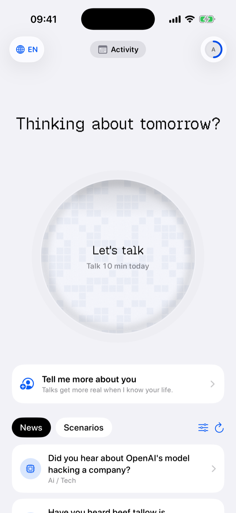
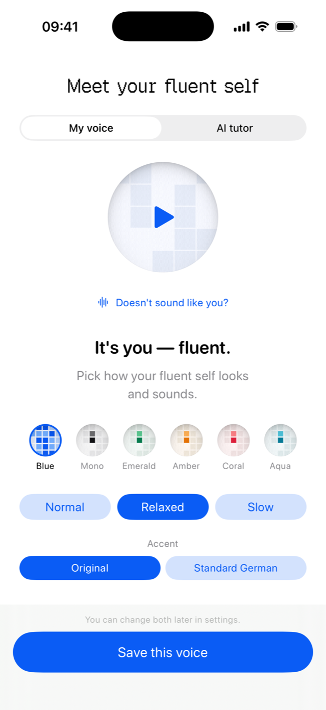
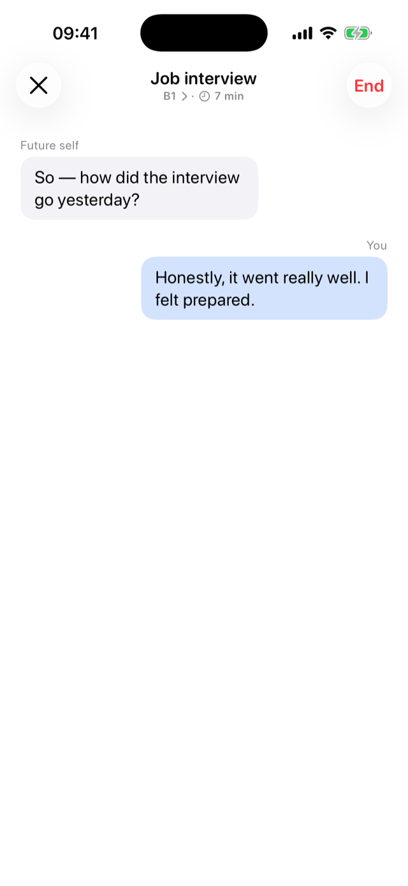
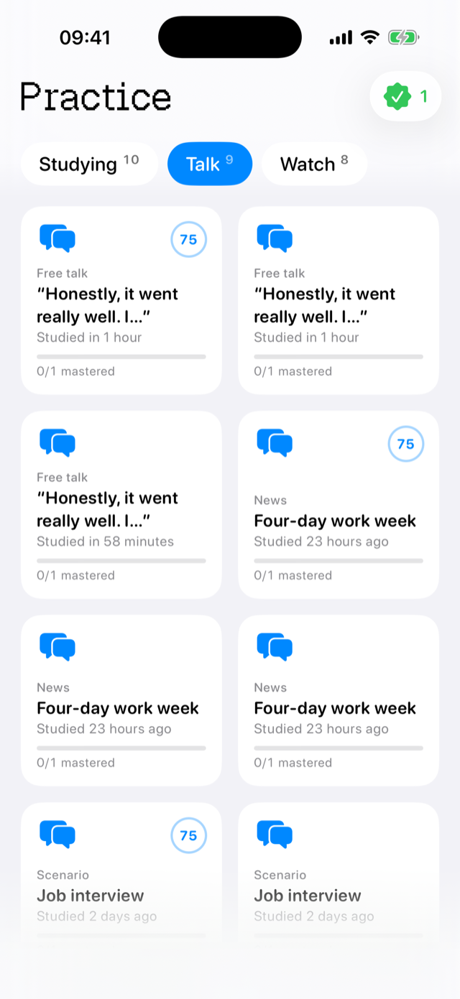
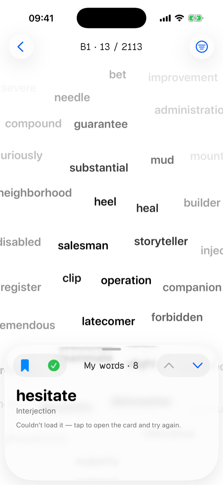
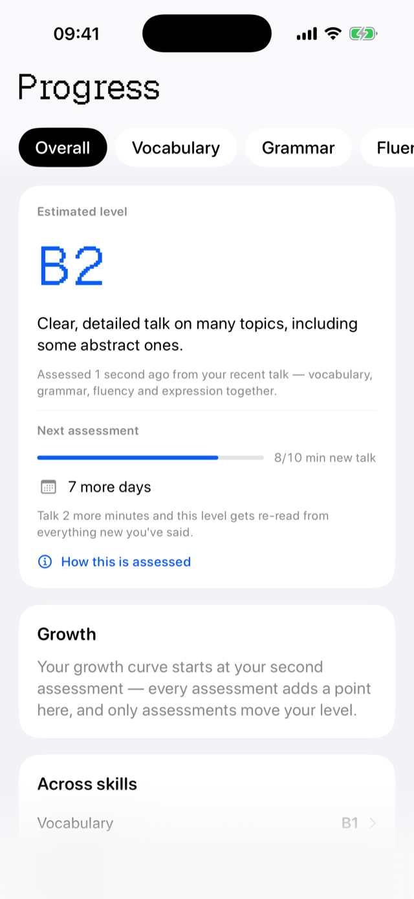
知らない誰かではなく、自分の声だから。
決めた時間に、未来の自分から電話がかかってくる。
自分のセリフは直した文で。相手の返事はその通話のまま。
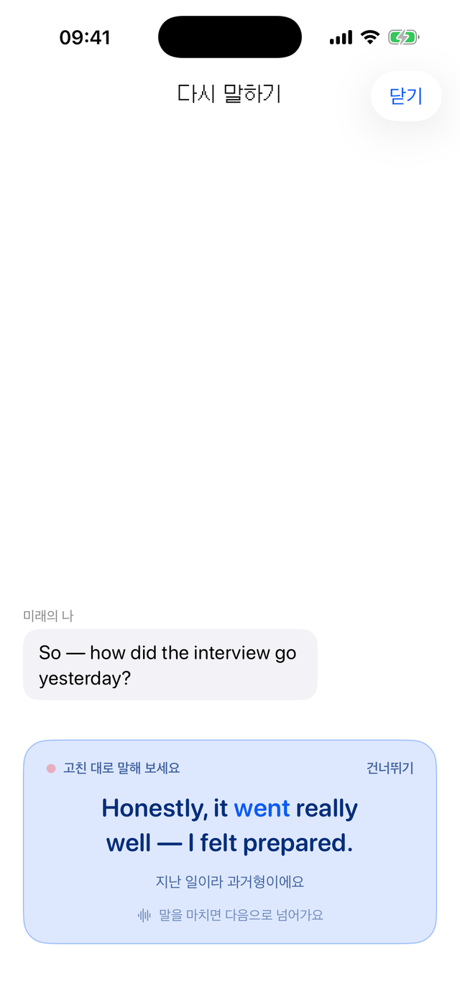
これから来る自分の場面を設定して、先に体験しておく。
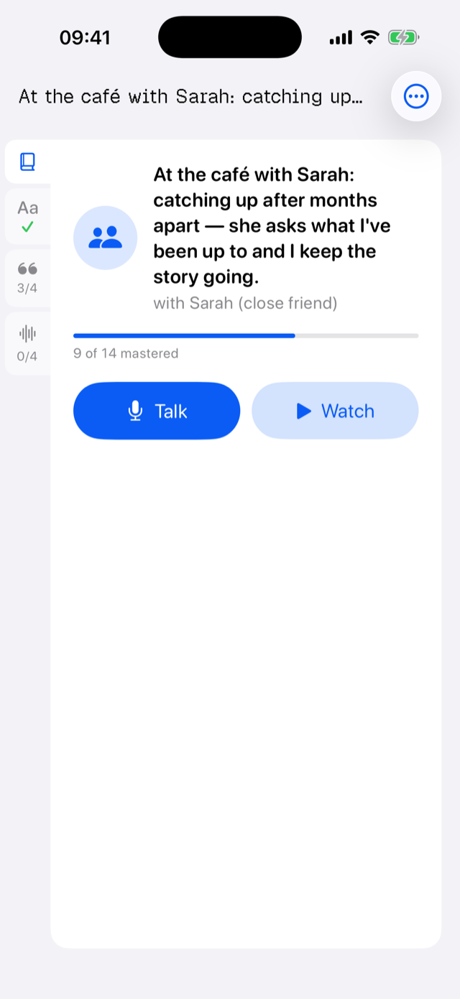
誰かが作った問題集ではなく、自分が実際に話した言葉で学ぶ。
お手本の声は、自分自身。
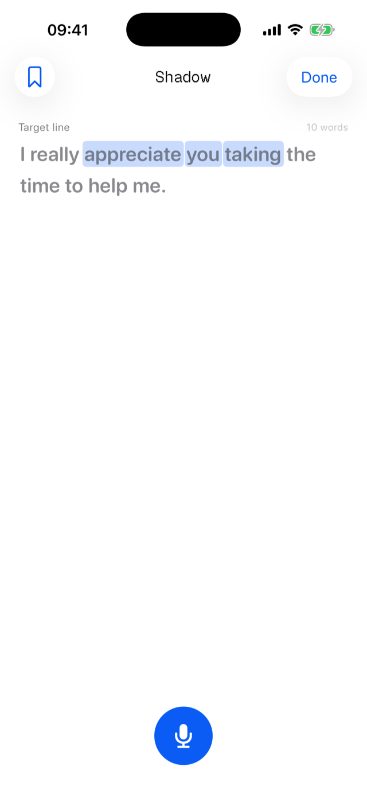
原稿を映して、本番のように声に出して読む。
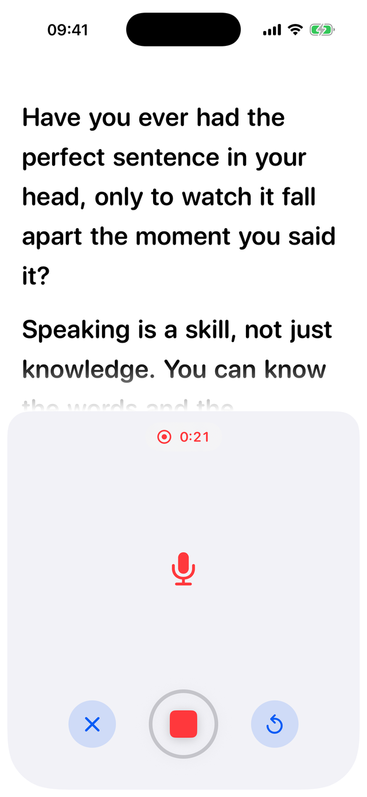
曜日ごとにやることを決めれば、それが自分との約束になる。
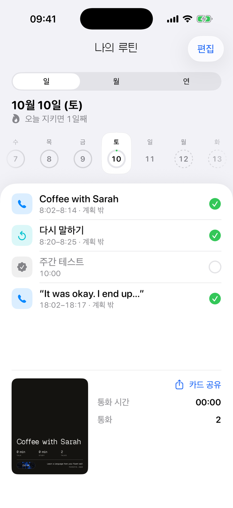
誰かが作った問題集ではなく、今週自分が話したことで。
練習はいつも、自分の人たちと、自分の場面で。
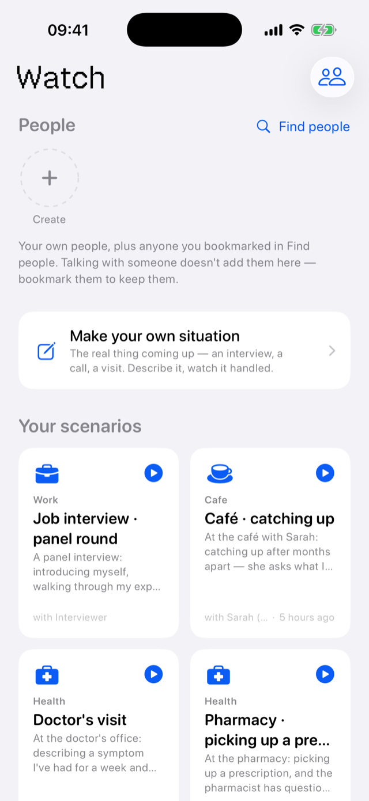
生きている、自分の語彙マップ。
ネイティブをどれだけまねても、
他人の声は
自分のものにならない。
本番で話すのは、結局
自分の声。
だから、手が届く目標を。
ネイティブのようにではなく、流暢になった未来の自分。
言葉が出てこないのは、
頭の中の考えを口に出す練習を
してこなかったから。
覚えた例文ではなく、
自分の考えを自分の言葉で。そこから始まる。
話して、文法と表現を直してもらう。
実際に話したことが、自分だけの教材になる。
最初の20分は、サブスクリプションなしで無料で話せます。
日本のApp Storeでの価格です。ほかの国では、App Storeにその国の価格が表示されます。
Webで登録した場合は、サブスクリプションの管理から変更・解約できます。
通話時間が減るのは会話が続いているあいだだけで、話が止まっているあいだは数えません。新しいシーン練習は同じ通話時間から1回5分を使い、一度見たシーンをもう一度見るのは無料です。時間が足りない月はアプリで時間を追加でき、サブスクリプションはApp Storeでいつでも解約できます。
設定のときの60秒だけです。自分で始めた会話の外で録音することはありません。
いつでも録音し直したり、削除したりできます。作り直すと、前のクローンは完全に削除されます。
会話・ドリル・学習の記録はiPhoneに保存されます。ほかの端末で続けたいときは、私たちのサーバーではなく、自分のiCloudで同期します。
設定のときに60秒を一度録音するだけです。そのあとは録音はいりません。会話もシーン練習もシャドーイングも、すべて流暢になった自分の声が話します。
はい。最初の20分はサブスクリプションなしで無料で話せます。声を作るのも無料です。
1か月分の通話時間です。Lightは150分、Plusは450分、Maxは900分。新しいシーン練習はこの時間から1回5分を使い、一度見たシーンをもう一度見るのは無料です。復習・会話の再生・シャドーイングはどのプランでも無制限です。
正直に言うと、ゼロから始める方には難しいです。たどたどしくても文を組み立てられる段階からがいちばん合っています。そこからは毎ターン流暢な言い方が返ってきて、会話の難しさもレベルに合わせて変わるので、話す量がどんどん増えていきます。
実際に話した単語と文から、CEFRレベル（A1〜C2）を測ります。意見ではなく実測なので、伸びが数字で見えます。
自分で始めた会話の外で録音することはありません。クローンはいつでも作り直したり削除したりできます。会話・ドリル・学習の記録はiPhoneに保存され、同期をオンにしても送られるのは自分のiCloudだけで、私たちのサーバーには送られません。
英語、ドイツ語、日本語、スペイン語、韓国語です。言語を増やしても料金は変わりません。